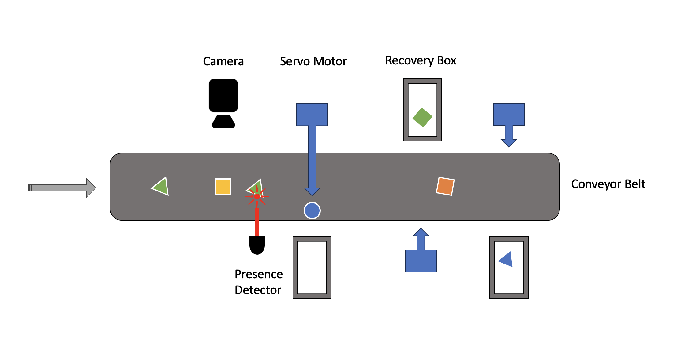
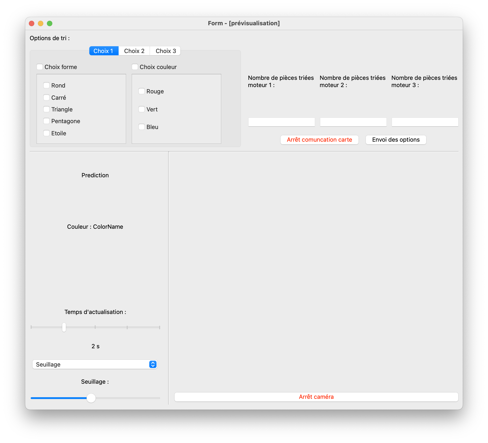
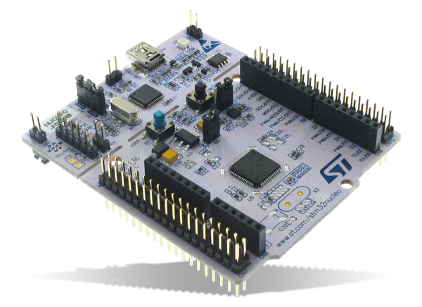

Welcome to Industrial_Vision’s documentation!#
Caution
This website is still a work in progress
Welcome to Industrial_Vision, a Python-based project that combines computer vision, artificial intelligence, and servo motors to automate a sorting process based on shape recognition !
{kind=link}
With a camera positioned above a conveyor belt, the system captures multiple images and utilizes a live feed to recognizes shapes with a pretrained AI model. The sorted objects are then directed to appropriate locations using servo motors, providing an efficient and streamlined sorting solution.
Project Overview#
With Industrial_Vision, the primary objective is to develop a practical system that can accurately identify and sort objects based on their shapes and their color.
The system user has access to an UI to select different system parameters such as different sorting options, different camera preprocessing options.
{kind=link}
Shape recognition is achived by implementing a camera system above a conveyor belt to capture images of objects passing through. The images are then processed using computer vision techniques, and the extracted features are fed into an AI model for shape recognition and color recognition.
See also
- class Industrial_Vision
Documentation of the
Industrial_Vision()module.
To train the AI model, we use the scikit-learn library in Python, we also developed the training algorithm for the AI model.
See also
- class IA_training
Documentation of the
IA_training()module.
To generate a database for training the AI model, we have implemented code that captures images of objects as they move along the conveyor belt. These images are labeled according to their corresponding shapes, creating a diverse dataset that enables the AI model to learn and classify shapes effectively.
See also
- class Create_DDB
Documentation of the
Create_DDBmodule.
Once the AI model identifies the shape and the color of an object, it sends a signal to a Nucleo STM32 card (coded in C++ via Keil studio) to trigger the servo motors integrated into the conveyor belt system.
{kind=link}
Finally this is how the objects arriving on the conveyor belt are sorted !